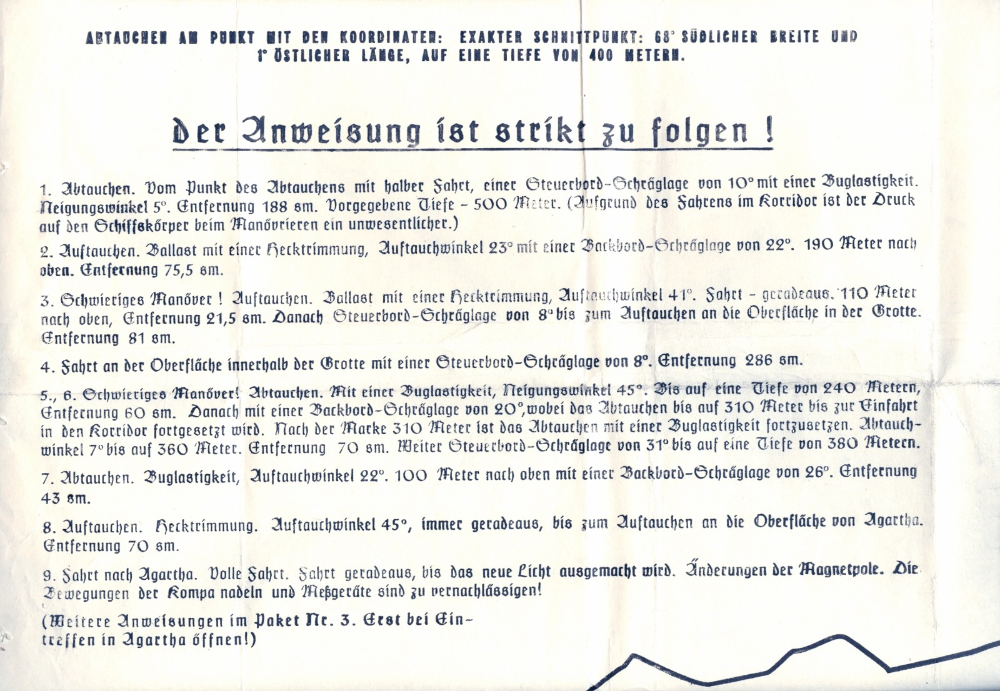
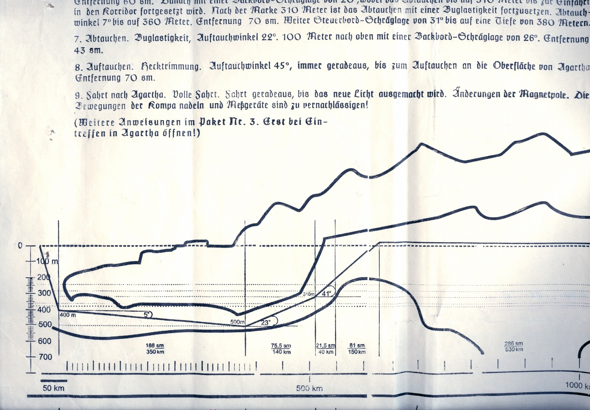
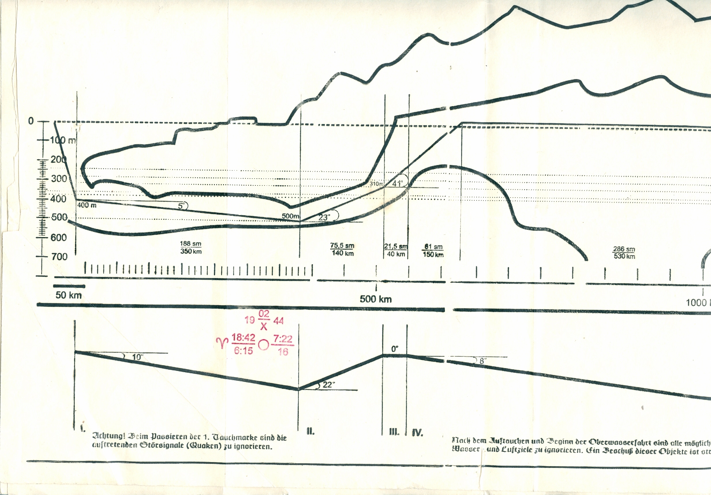
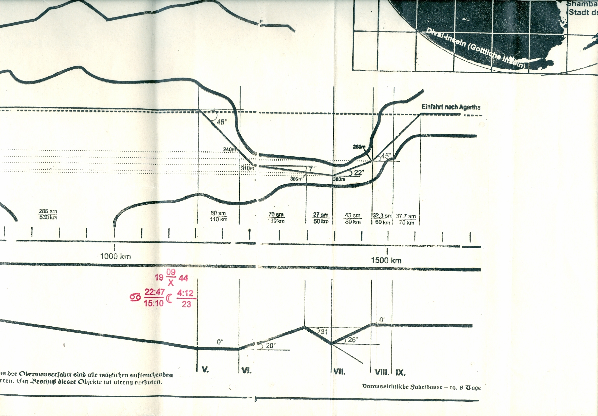
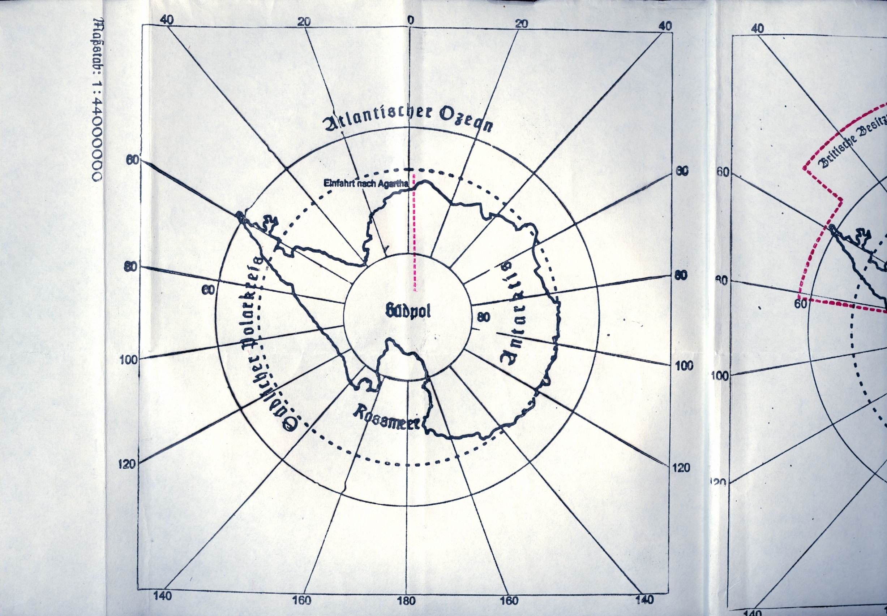
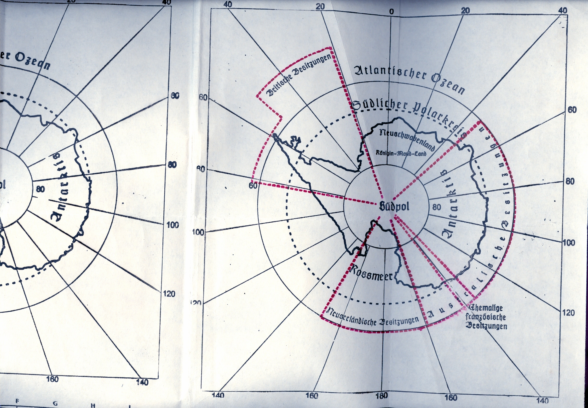
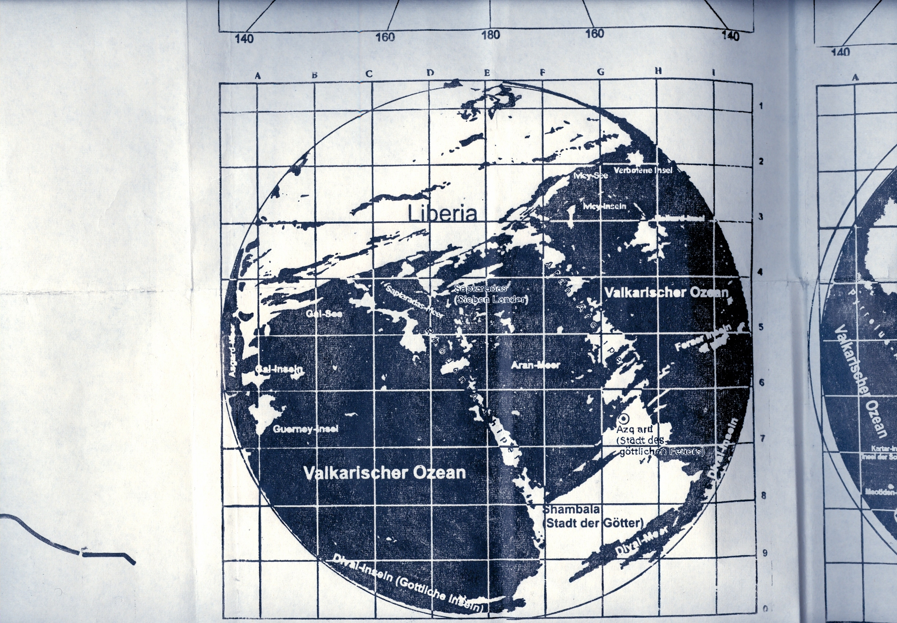
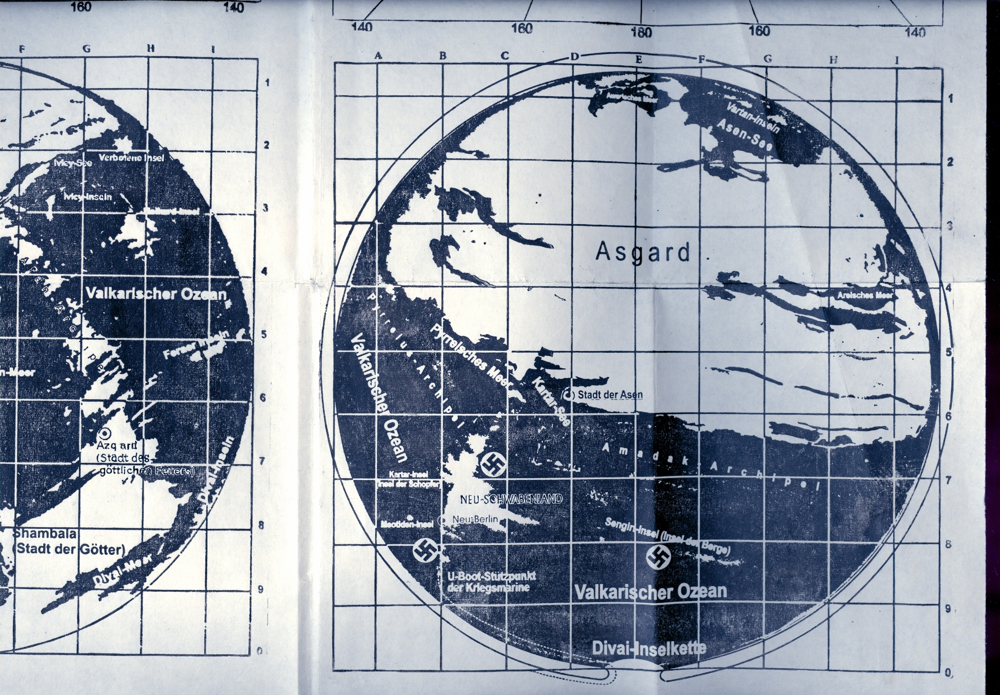
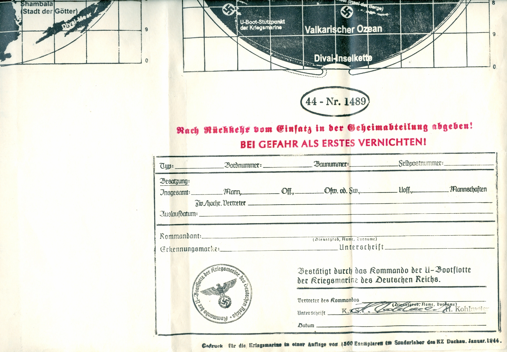

Antarctica, a continent of unexplored mysteries, if only the world could see what beautiful mysteries you hold.
Everything displayed in this article is not associated with me.
1 / 22
Secret Commandothing
Only for U-Boat captains of the A-Class of the Special Convoy of the Führer
U-Boatfleet of the Kriegsmarine (Navy) of the German Reich
Map for the passing of the Sea depths
Only use for manouvering!
Instructions for Passing of Spaces and Corridors for the journey to Agartha
Submerge at the spot with the Coordinates: Exact intersection: 60° southern width and 1° Eastern Length, to a depth of 400 metres.
2 / 22

"Submerge at the spot with the Coordinates: Exact intersection: 60° southern width and 1° Eastern Length, to a depth of 400 meters
The Instructions are to be followed strictly!
1. Submerging. From the point of Submerging at half speed, a starboard-angle of 10° with a pull.
2. Emerging. Ballast with a stretch trim, emerging angle 23° with a port-angle of 22°. 190 meters to the top. (to the top meaning from the surface I think) Distance: 75,5 sm (sea miles)
3. Difficult maneuver! Emerge. Ballast with a stretch trim, emerging angle 41°. Move - straight. 110 meters to the top, distance 25,5 sm. Then starboard-angle of 8° until emerging at the surface in the Cave. Distance 81 sm.
4. Move at the surface inside the cave with a starboard-angle of 8°. Distance 286sm.
5., 6. Difficult maneuver! Submerge. With a pull, forward-tilt 45°. Up to a depth of 240 meters, distance 60sm. Then with port-angle length of 20°, although the descent to 310 meters until the entry into the corridor is to be continued. After the 310 meter mark the descent with a tensile load is to be continued. Descending angle 7° up until 310 meters. Distance 70 sm. Onward Starboard-angle of 31° until a depth of 380 meters.
7. Descent. Trailing load, emerging angle 22°, 100m up with a port-angle of 26°. Distance 43sm.
8. Emerge. Stretch trim. Emerging angle 45°, always straight, until emerging at the surface of Agartha. Distance 70sm.
9. Go to agartha. Full speed. Go straight, until the new light is determined. Change of magnetic poles. The moving of compass needles and measuring devices is to be ignored.
(Further instructions in package nr. 3. Only open when entering Agartha!)
3 / 22

Depth-chart of the entrance into Agartha.
4 / 22

I. Danger! When traversing the first submerging-mark the upcoming white noise (screeching) is to be ignored.
II. Keep steady at a 22" ascension.
III. Keep steady at a 0° angle.
IV. After the emergence and the start of the above water voyage, all possibly emerging water and air targets are to be ignored. Shelling (shooting) of these objects is strictly forbidden.
VII. Anticipated time of voyage - circa 8 days.
5 / 22

V. Keep steady at a 0° angle.
VI. Keep steady at a 22" ascension followed by a 31" decline.
VII. 26" incline.
VIII. Keep steady at 0".
IX. Entry into Agartha.
6 / 22

At the top of the map:
"Atlantic Ocean"
Outer circle: "Southern Polar Circle".
The depiction of the South Pole says "South pole" in the center as well as "Antarctis" on the side.
Further down, it also says "Ross Sea", at the bottom. Next to the red line at the top is written; "entry to Agartha".
7 / 22

At the top of the circle: "Atlantic Ocean".
Below "Southern Polar Circle".
On the image itself: "New Swabia" and below that "Queen-Maudland".
The Red Area at the top left says "British Occupation Zone", the one at the very south says "New Zealand Occupation Zone", and the very long text in the right of the image says "Australian Occupation Zone".
Further at the outside of the circle, at the bottom right it says "French occupation zone".
8 / 22

At the top it says "Liberia".
Gal-See = Gal-Sea or Gal-Lake
Gal-Inseln = Gal Islands
Guerney-Insel = Guerney-Island
Valkarischer Ozean = Valcarian Ocean
Rhodon-Archipellago (self explanatory)
Saptaradas-Meer = Saptaradas-Sea
Saptaradas (Sieben Länder) = Saptaradas (seven countries/seven islands)
Aran-Meer = Aran Sea
Ivicy-Inseln = Ivicy-Islands
Ferner Inseln = Further islands (further not being a description, but rather the name)
Azqard (Stadt des göttlichen Feuers) = Asgard (?) (City of the godly fire)
Shambala (Stadt der Götter) = Shambala (City of gods)
Dival-Meer = Dival Sea
Dival Inseln (göttliche inseln) = Dival Islands (Godly (or holy) islands)
9 / 22

Vartan Inseln = Vartan Islands
Asen-See = Asen Sea/Asen Lake
Asgard (self explanatory)
Areisches Meer = Areishan sea
Stadt der Asen = City of the Asen
Pyrreisches Meer = pyrrean sea
Kartar-See = Kartar-Sea
Amadak Archipel = armadak archipellago
pyrreius-archipel = pyrreius archipellago
Valkarischer Ozean = valkarian sea
Karter-Insel (Insel der Schöpfer) = Karter-Island (Islands of the creators/the makers)
NEU-SCHWABENLAND = new swabia
Neu-Berlin = New Berlin
Meotiden-Insel = Meotiden-Island
U-Boot-Stützpunkt der Kriegsmarine = U-Boat-Station/Base of the Kriegsmarine (navy)
Sengin-Insel (Insel der Berge) = Sengin Island (Island of Mountains)
Divai-Inselkette = Divai-island chain
10 / 22

44-Nr.1489
After returning from mission hand over to secret department(of the german military probably)!
AT DANGER FIRST DESTROY!
Type:
Boardnumber:
Buildnumber:
Fieldpost number:
Crew:
Total(crew):men,Off. (officers), Ofw. od. fw. (Oberfeldwebel or Feldwebel, Generals/military personel I think), waff (weapons), Crews
Expiration date:
Commander: (Military rank, Name, Surname)
Identification tag:
Signature:
Validated by the Commando of the U-Boat fleet of the Kriegsmarine of the German Reich
_
Representative of commando:
Signature: K.z.S. (??), H. Kohlmeier
Date:
At the bottom:
Print for the Kriegsmarine in a Number of (500 special copies in the special lab of the KZ (Konzentrationslager, Concentration camp) Dachau. January 1944.
22 / 22

❮
❯